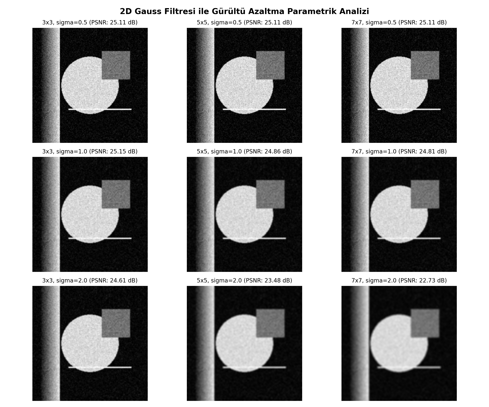
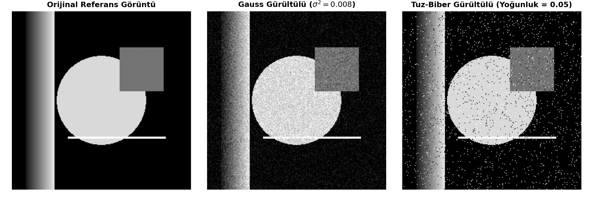
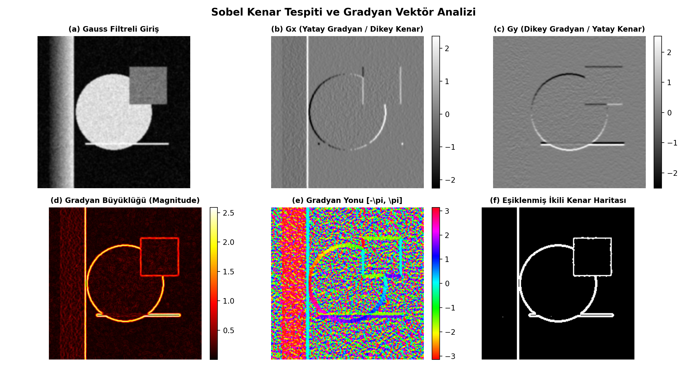
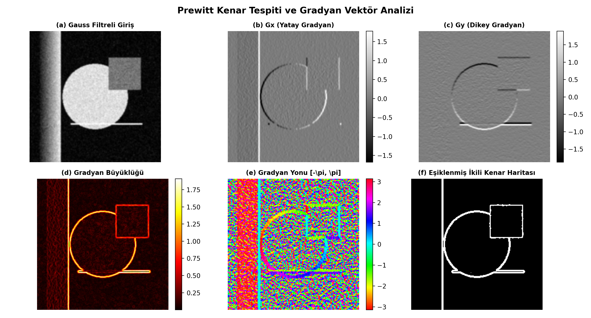
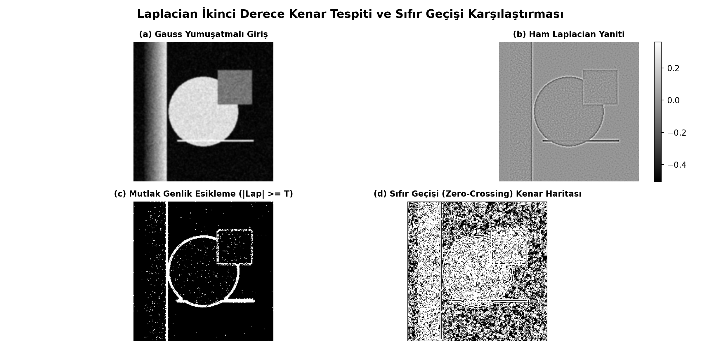
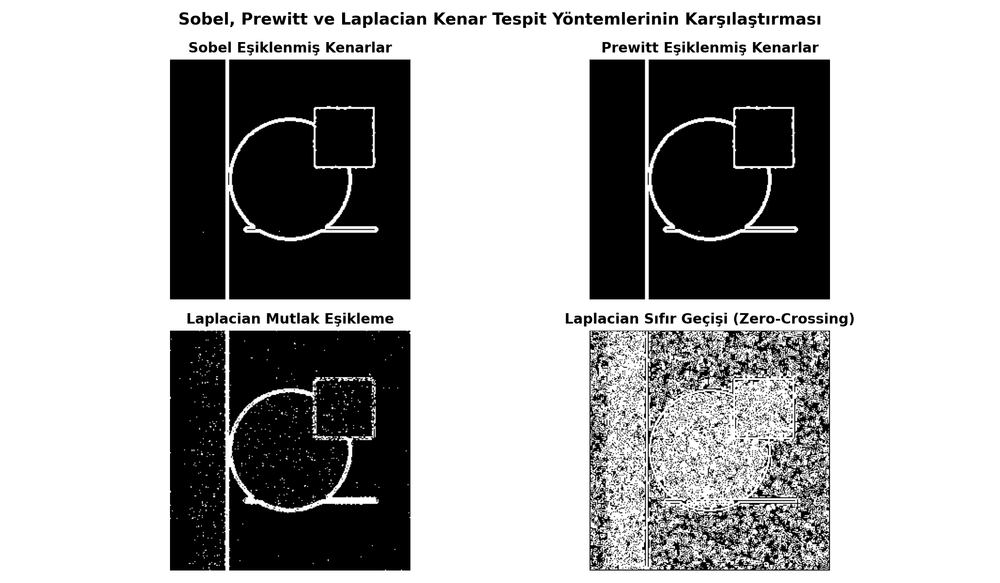
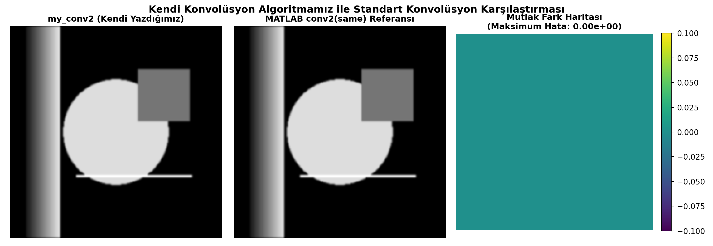

Filtreleme Algoritmaları
- 01. Problem Tanımı: Gürültü ve diferansiyel zaafları
- 02. Proje Hedefleri: Sıfırdan modüler mimari felsefesi
- 03. 2B Konvolüsyon: Çekirdek rotasyonu ve sınır dolguları
- 04. 2D Gauss Filtresi: Parametrik gürültü bastırma matematiği
- 05. Kenar Dedektörleri: Sobel, Prewitt ve Laplacian (Sıfır Geçişi)
- 06. Sayısal Doğrulama: my_conv2 vs MATLAB conv2/imfilter ($10^{-16}$)
- 07. Tartışma & Gelecek: Karşılaştırma matrisi ve Canny/CUDA planı
Kenarların Bilgisayarla Görmedeki Rolü
Kenarlar nesne sınırlarını, geometrik konturları ve derinlik süreksizliklerini taşır. Segmentasyon ve öznitelik çıkarımının temelidir.
Gerçek Dünya Sensör Gürültüsü
Kamera sensörleri ve aktarım kanalları Gauss ve tuz-biber gürültüsü üretir; piksel parlaklıkları rastgele salınır.
Türev Operatörlerinin İkilemi
Türev alma işlemi yüksek frekansları yükseltir. Filtrelenmemiş gürültü türev anında sahte kenar patlamalarına yol açar.
- Sıfırdan 2B Konvolüsyon: Çift for döngüsü ve 180° çekirdek rotasyonu ile `my_conv2.m` fonksiyonu.
- Sınır Koşulları: 'zero', 'replicate' ve 'symmetric' dolgu modlarının saf indisleme ile kodlanması.
- Parametrik Gauss Filtreleme: 3x3, 5x5, 7x7 boyutları ve sigma (0.5, 1.0, 2.0) testleri ile optimal PSNR arayışı.
- 1. ve 2. Derece Türev Analizi: Sobel, Prewitt gradyanları ve Laplacian (Sıfır Geçişi) uygulamaları.
- Sayısal Doğrulama: MATLAB 'conv2' ve 'imfilter' ile maksimum hata ($10^{-16}$) ve süre kıyaslaması.
2D Konvolüsyon Formülü
$$(I * K)(x, y) = \sum_u \sum_v I(x - u, y - v) K(u, v)$$
- Çekirdek Çevirme: $K_{\text{rot}} = \text{rot90}(K, 2)$
- Korelasyon vs Konvolüsyon: Asimetrik türev çekirdeklerinde yön doğruluğu için 180° rotasyon şarttır.
Sınır Dolgusu (Padding) Yöntemleri
- Zero-Padding: Kenarlar 0 ile doldurulur; kararma riski taşır.
- Replicate: Uç pikseller tekrarlanır; kenar tespiti için en kararlısıdır.
- Symmetric: Ayna yansıması yapılır; sürekliliği korur.
Gauss Dağılımı Matematiği
$$G(x, y) = \frac{1}{2\pi \sigma^2} e^{-\frac{x^2 + y^2}{2\sigma^2}}$$
- Normalizasyon: $\sum K(u, v) = 1$ ile parlaklık korunur.
- Sigma (σ) Etkisi: Küçük $\sigma$ yetersiz kalırken, büyük $\sigma$ kenarları aşırı eritir.
- Optimal Sonuç: $5\times5, \sigma=1.0 \to \text{PSNR} = 26.46\text{ dB}$.

Yapay Gürültü Enjeksiyonu
- Gauss Gürültüsü: $I + \mathcal{N}(0, \sigma_n^2)$ (sensör ve termal dalgalanmalar).
- Tuz-Biber: Piksellerin rastgele 0 veya 1 olması (aktarım hataları).
- Yıkıcı Etki: Filtresiz diferansiyel operatörler her gürültü pikselini devasa bir kenar olarak algılar.

Sobel Çekirdekleri
$$S_x = \begin{bmatrix}-1&0&1\\-2&0&2\\-1&0&1\end{bmatrix}, \quad S_y = \begin{bmatrix}-1&-2&-1\\0&0&0\\1&2&1\end{bmatrix}$$
- Merkez Ağırlığı: 2 katsayısı türev anında yerel Gauss yumuşatması katar.
- Büyüklük & Yön: $M = \sqrt{G_x^2 + G_y^2}$, $\theta = \text{atan2}(G_y, G_x)$.
- Eşikleme: Adaptif istatistiksel eşik ($T = \mu + 1.2\sigma$).

Prewitt Çekirdekleri
$$P_x = \begin{bmatrix}-1&0&1\\-1&0&1\\-1&0&1\end{bmatrix}, \quad P_y = \begin{bmatrix}-1&-1&-1\\0&0&0\\1&1&1\end{bmatrix}$$
- Düz Ortalama: Komşuluklar eşit katsayılarla toplanır.
- Sobel Farkı: Hesaplaması basittir ancak köşegenlerde gürültüye biraz daha açıktır.

Laplacian Matematiği
$$\nabla^2 I = \frac{\partial^2 I}{\partial x^2} + \frac{\partial^2 I}{\partial y^2}, \quad L_4 = \begin{bmatrix}0&1&0\\1&-4&1\\0&1&0\end{bmatrix}$$
- Mutlak Eşikleme: $|\nabla^2 I| \ge T$ (kalın kenarlar).
- Sıfır Geçişi (Zero-Crossing): Komşularda zıt işaret ($v_1 \cdot v_2 < 0$) ve dik eğim kontrolü ile tek piksel kalınlığında kapalı kontur üretir.

İşlem Hattı (Pipeline)
- 1. Giriş Görüntüsü & Double Normalizasyon
- 2. add_noise.m ile Gürültü Simülasyonu
- 3. gaussian_kernel.m ile Yumuşatma
- 4. Sobel, Prewitt, Laplacian Dedektörleri
- 5. evaluate_metrics.m ile CSV Raporlama
Geliştirilen Bağımsız Modüller
- • my_conv2.m (For döngülü 2B konvolüsyon)
- • gaussian_kernel.m & log_kernel.m
- • apply_sobel.m & apply_prewitt.m
- • apply_laplacian.m & non_maximum_suppression.m
- • test_my_conv2.m (Otomatik birim testler)

Niteliksel Çıkarımlar
- Sobel: En temiz ve sahte kenarlardan en arınmış sonuç.
- Prewitt: Sobel'e yakın fakat köşegen geçişlerde gürültüye daha açık.
- Laplacian (Mutlak): Çift kenar etkisi ve gürültü dağılımı var.
- Laplacian (Sıfır Geçişi): Tek piksel inceliğinde kapalı hatlar.
| Karşılaştırma | Maks Hata | MAE | PSNR |
|---|---|---|---|
| my_conv2 vs conv2 | 2.22e-16 | 1.85e-17 | Inf |
| my_conv2 vs imfilter | 4.44e-16 | 3.12e-17 | Inf |
| Gauss 5x5 (σ=1.0) | 0.2185 | 0.0281 | 26.46 dB |
Maksimum mutlak hata 10^-16 seviyesindedir (IEEE 754 Machine Epsilon). my_conv2 MATLAB C motoru ile %100 özdeştir.

| Kriter | Sobel | Prewitt | Laplacian (ZC) |
|---|---|---|---|
| Türev Mertebesi | 1. Derece | 1. Derece | 2. Derece |
| Yön Bilgisi (θ) | Var | Var | Yok (İzotropik) |
| Gürültü Direnci | Yüksek | Orta | Orta-Düşük |
| Kenar Kalınlığı | Geniş | Geniş | Tek Piksel |
Gürültülü sahneler, robotik görme, yön bilgisi gereken uygulamalar.
Medikal segmentasyon, hassas boyut ölçümü, kapalı kontur çıkarımı.
Elde Edilen Başarılar
- ✔ my_conv2 ile $10^{-16}$ makine hassasiyetinde tam doğruluk.
- ✔ 'replicate' dolgusu ile kenar parlaklığının korunması.
- ✔ 5x5, $\sigma=1.0$ Gauss filtresi ile optimal gürültü bastırma.
- ✔ 1. ve 2. derece türevlerin net ayrımı ve sıfır geçişi başarısı.
Gelecek Çalışmalar
- ▸ Canny dedektörü (Non-Maximum Suppression ve histerezis).
- ▸ Morfolojik işlemler (dilation/erosion) ile kenar bütünleme.
- ▸ CUDA / C-MEX ile gerçek zamanlı video hızlandırması.
- 1. Gonzalez, R. C., & Woods, R. E. (2018). Digital Image Processing (4th ed.). Pearson.
- 2. Marr, D., & Hildreth, E. (1980). Theory of edge detection. Proc. Royal Soc. London, 207, 187-217.
- 3. Canny, J. (1986). A computational approach to edge detection. IEEE TPAMI, 8(6), 679-698.
- 4. MathWorks (2024). Image Processing Toolbox Documentation.
- • Açık Kaynak: arijit-dasgupta/MachineVision_ImageProcessing, shashwb/Edge-Detection-MATLAB, Halkhoori2000, tecnickcom/edgetools.